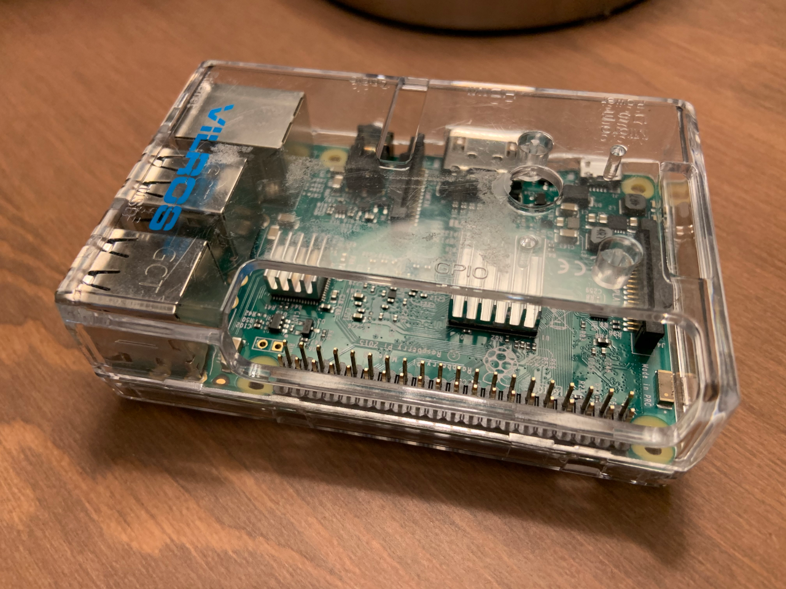

Tag: sysadmin

Running an OnionShare anonymous dropbox on a Raspberry Pi
Now that the command line version of OnionShare has better support for running on headless Linux servers, I figured I should set up a dedicated Raspberry Pi anonymous dropbox server, and while I'm at it document how I'm doing it in a blog post.
Hardening Debian for the Desktop Using Grsecurity
I recently built a desktop system that I think is reasonably secure. It’s running Debian sid, also known as “unstable” — though in the Debian desktop world that just means you get to use the newest software. It’s just about as stable as “stable”, and besides, #yolo. It’s also running a grsecurity-patched Linux kernel and PaX, technologies that make Linux way more secure. Grsecurity protects you against memory corruption attacks, such as buffer overflows.

Beefing Up Security on Your SSH Server
Lately I’ve been thinking about setting up a blog to talk about tech things I find interesting, particularly web security, since that’s how I spend a lot of my work and free time. Since I had an under-used VPS sitting around, I figured I ought to set up WordPress on it and start blogging. What better topic to blog about than how I’m securely setting up this website?